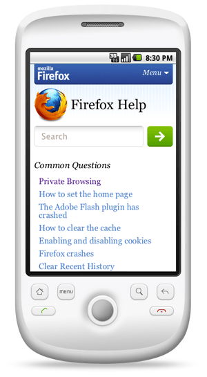

The "separate sites" approach to mobile Web development involves creating different sites for mobile and desktop Web users. This approach has positive and negative aspects.
The first option is the most popular by far: use user-agent detection to route users on phones to a separate mobile site, typically at m.example.com. In a nutshell, this technique uses server-side logic to solve all three goals of mobile web development at once — if the user’s browser looks like it’s on a phone, you serve them mobile content, formatted for their phone and optimized for speed.
Conceptually simple, this is the easiest option to add to an existing site, especially if you are using a CMS or Web application that supports templates. Since only the mobile-specific content, styles, and scripts are sent to mobile users, this method also provides for the best performance out of any of the other options presented here. Finally, it also allows for completely different user experiences on desktop and mobile — they’re two different sites, after all!
Unfortunately, this approach is not without its drawbacks. For starters, you are now maintaining two different pages for every page on your site that you would like to expose to mobile users. If you are using a CMS, it is possible to arrange your site templates in a way that minimizes this duplication. However any time that there is a difference between the mobile and desktop templates, there is a potential source of complication in your code. Similarly, this increases the implementation time of any new site features, since you must now code two sets of front-end logic.
Even more important than that, though, is the fact that user-agent detection is inherently flawed, and anything but future-proof. Every time a new browser comes out, you must adjust your algorithm to accommodate it. And false positives are particularly scary — it could be embarrassing to serve desktop users your mobile site accidentally.
Firstly, if your target audience includes users on older or low-end feature phones, it is worth noting that you may need to employ this strategy to some degree no matter what. This is because the default browsers on some feature-phones do not support the same markup that you would use to code a website targeted at the desktop, but instead understand formats like XHTML-MP or the older WML.
This factor aside, there is one case where this strategy really shines over other methods. If the functionality you would like to provide to your users on mobile devices is extremely different from that on a desktop, then using separate sites is likely to be the most practical choice. This is because you have the option of sending completely separate HTML, JavaScript, and CSS to phones and PCs.
Another case where you may be forced to use this approach is if you cannot, for whatever reason, modify your existing desktop site, and need to have a 100% separate mobile site. Though it’s not ideal, at least you have this option.
Most of the major Web applications you see in the wild have chosen this path, including Facebook, YouTube, Digg, and Flickr. In fact, Mozilla picked this strategy for the mobile versions of addons.mozilla.org (AMO) and support.mozilla.org (SUMO). If you’d like to see the source code behind an example of this approach in action, feel free to check out the github repository for AMO or SUMO.
See the following articles for background and other approaches to developing for mobile platforms.
This article was originally published on 13 May 2011, on the Mozilla Webdev blog as "Approaches to Mobile Web Development Part 2 – Separate Sites", by Jason Grlicky.